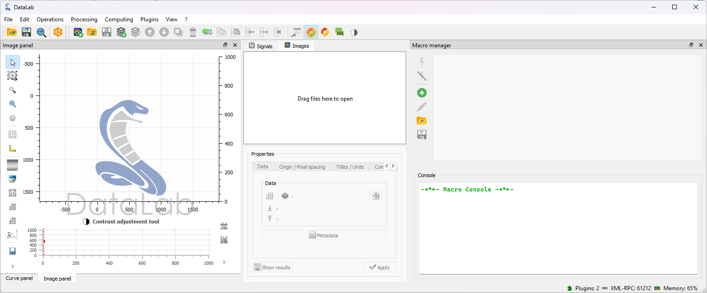
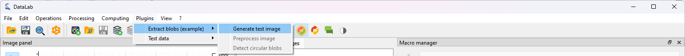
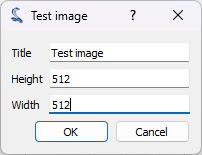
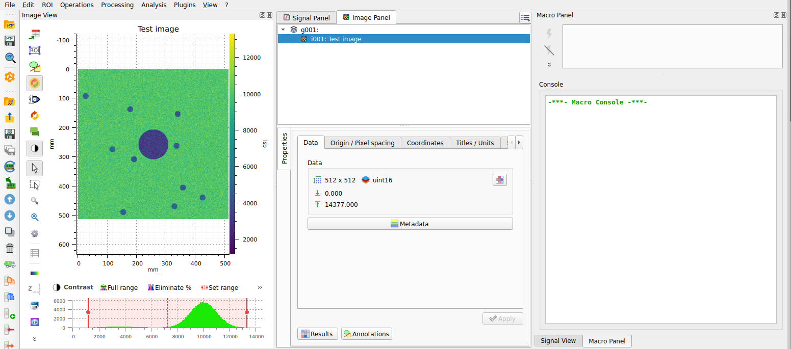
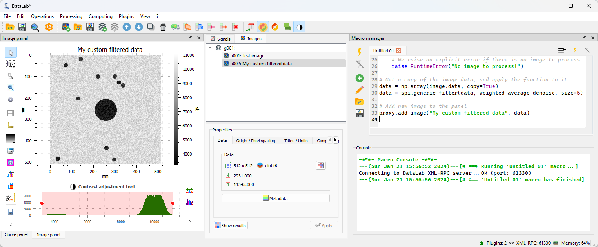
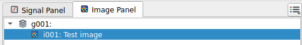
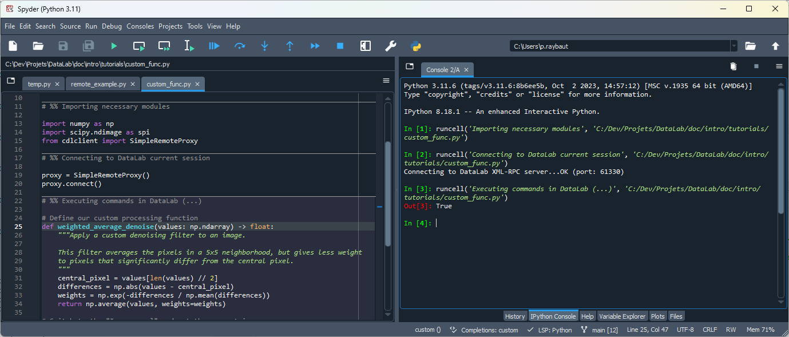
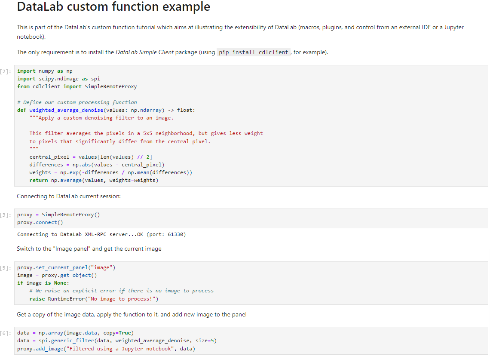
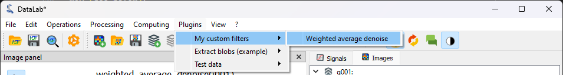
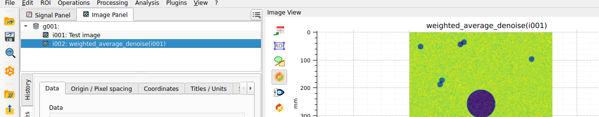

Prototypage d’une chaîne de traitement personnalisée#
Pour votre application spécifique, il est possible que vous ayez besoin d’une fonction qui n’est pas disponible dans DataLab par défaut. Dans ce cas, vous pouvez définir votre propre fonction et l’intégrer dans DataLab pour analyser vos données de manière pratique. DataLab a été conçu pour être flexible et extensible, et le but de ce tutoriel est de vous montrer comment faire cela.
Cet exemple montre comment prototyper une chaîne de traitement d’image personnalisée en utilisant DataLab :
Définir une fonction de traitement personnalisée
Créer une macro-commande pour appliquer la fonction à une image
Utiliser le même code à partir d’un IDE externe (par exemple Spyder) ou d’un notebook Jupyter
Créer un plugin pour intégrer la fonction dans l’interface graphique de DataLab
Définir une fonction de traitement personnalisée#
Pour illustrer l’extensibilité de DataLab, nous allons utiliser une fonction de traitement d’image simple qui n’est pas disponible dans la distribution standard de DataLab, et qui représente un cas d’utilisation typique pour le prototypage d’une chaîne de traitement personnalisée.
La fonction sur laquelle nous allons travailler est un filtre de débruitage qui combine les idées de moyenne et de détection de contours. Ce filtre va moyenner les valeurs des pixels dans le voisinage, mais avec une particularité : il donnera moins de poids aux pixels qui sont significativement différents du pixel central, en supposant qu’ils pourraient faire partie d’un contour ou du bruit. Une fois que vous aurez compris comment implémenter un traitement personnalisé dans DataLab, vous pourrez définir vos propres fonctions adaptées à vos besoins spécifiques.
Voici le code de la fonction weighted_average_denoise :
def weighted_average_denoise(data: np.ndarray) -> np.ndarray:
"""Apply a custom denoising filter to an image.
This filter averages the pixels in a 5x5 neighborhood, but gives less weight
to pixels that significantly differ from the central pixel.
"""
def filter_func(values: np.ndarray) -> float:
"""Filter function"""
central_pixel = values[len(values) // 2]
differences = np.abs(values - central_pixel)
weights = np.exp(-differences / np.mean(differences))
return np.average(values, weights=weights)
return spi.generic_filter(data, filter_func, size=5)
Configurer l’environnement de test#
Pour tester notre fonction de traitement, nous allons utiliser une image générée à partir d’un exemple de plugin DataLab (plugins/examples/datalab_example_imageproc.py). Avant de commencer, assurez-vous que le plugin est installé dans DataLab (voir les premières étapes du tutoriel Détection de taches sur une image pour comprendre comment le faire).
Nous réorganisons ensuite la disposition de la fenêtre de DataLab pour avoir un environnement confortable pour développer et tester notre fonction : nous réorganisons la disposition de la fenêtre de DataLab pour avoir le « Panneau Image » à gauche et le « Gestionnaire de Macros » à droite. Pour ce faire, vous pouvez simplement faire glisser et déposer les panneaux à la position souhaitée. Si le « Gestionnaire de Macros » n’est pas visible, vous pouvez l’activer depuis le menu « Affichage > Panneaux > Gestionnaire de Macros ».

La disposition de la fenêtre de DataLab réorganisée pour avoir le « Panneau Image » à gauche et le « Gestionnaire de Macros » à droite.#
Nous pouvons maintenant générer une image de test en utilisant le plugin que nous avons installé précédemment. Pour ce faire, nous cliquons sur le menu « Plugins > Extract blobs (example) > Generate test image ». La fonction que nous développons est assez lente, nous choisissons donc une taille limitée pour l’image (par exemple 512x512 pixels).

Nous générons une nouvelle image en utilisant le menu « Plugins > Extract blobs (example) > Generate test image ».#

Nous sélectionnons la taille de l’image et cliquons sur « OK ».#
Le plugin génère une image de test et l’ajoute au « Panneau Image ».

L’image générée dans le « Panneau Image ».#
Créer une macro-commande#
Une macro est un code qui peut être exécuté directement dans DataLab pour automatiser des tâches. Les macros sont écrites en Python et utilisent l’API de DataLab pour interagir avec DataLab.
De plus, les macros ont les caractéristiques importantes suivantes :
Les macros font partie de l”espace de travail de DataLab, ce qui signifie qu’elles sont sauvegardées et restaurées lors de l’exportation et de l’importation vers/depuis un fichier HDF5.
Les macros sont exécutées dans un processus séparé, nous devons donc importer les modules nécessaires et initialiser le proxy vers DataLab. Le proxy est un objet spécial qui nous permet de communiquer avec DataLab.
En conséquence, lors de la définition d’un plugin ou du contrôle de DataLab à partir d’un IDE externe, nous pouvons utiliser exactement le même code que dans la macro-commande. C’est un point très important, car cela signifie que nous pouvons prototyper notre chaîne de traitement dans DataLab, puis utiliser le même code dans un plugin ou dans un IDE externe pour le développer davantage.
Note
La macro-commande est exécutée dans l’environnement Python de DataLab, nous pouvons donc utiliser les modules disponibles dans DataLab. Cependant, nous pouvons également utiliser nos propres modules, tant qu’ils sont installés dans l’environnement Python de DataLab ou dans une distribution Python compatible avec l’environnement Python de DataLab. Une liste des modules disponibles dans l’environnement Python de votre DataLab est disponible dans la boîte de dialogue « ? > Installation et configuration > Configuration de l’installation ».
Si vos modules personnalisés ne sont pas installés dans l’environnement Python de DataLab, et s’ils sont compatibles avec la version Python de DataLab, vous pouvez préfixer sys.path avec le chemin vers la distribution Python qui contient vos modules :
import sys
sys.path.insert(0, "/path/to/my/python/distribution")
Cela vous permettra d’importer vos modules dans la macro-commande et de les mélanger avec les modules disponibles dans DataLab.
Avertissement
Si vous utilisez cette méthode, assurez-vous que vos modules sont compatibles avec la version Python de DataLab. Sinon, vous obtiendrez des erreurs lors de leur importation.
Pour éditer les macros, nous utilisons le « Gestionnaire de Macros » disponible dans DataLab. Ce panneau est divisé en deux parties : la partie supérieure est l’éditeur de macros, où nous pouvons écrire et éditer le code de la macro ; la partie inférieure est la console, où nous pouvons voir la sortie de la macro. Si l’éditeur de macros est trop petit pour afficher tous les boutons de la barre d’outils des macros, certains d’entre eux sont cachés et peuvent être accessibles en cliquant sur le bouton de dépliage. Alternativement, vous pouvez redimensionner l’éditeur de macros en faisant glisser le séparateur entre l’éditeur et la console.
Revenons à notre fonction personnalisée. Nous pouvons créer une nouvelle macro-commande qui appliquera la fonction à l’image actuelle. Pour ce faire, nous ouvrons le « Gestionnaire de Macros » et cliquons sur le bouton « Nouvelle macro » .
DataLab crée une nouvelle macro-commande qui n’est pas vide : elle contient un code d’exemple qui montre comment créer une nouvelle image et l’ajouter au « Panneau Image ».
Dans ce code, nous pouvons remarquer la présence de la classe RemoteProxy qui est utilisée pour communiquer avec DataLab. Cette classe fait partie de l’API de DataLab, et est utilisée pour accéder aux objets et fonctions de DataLab à partir d’une macro-commande, d’un plugin ou d’un IDE externe. Vous pouvez trouver la documentation de l’API de DataLab dans la section API.
Nous pouvons supprimer ce code et le remplacer par notre propre code :
# Import the necessary modules
import numpy as np
import scipy.ndimage as spi
from datalab.control.proxy import RemoteProxy
# Define our custom processing function
def weighted_average_denoise(values: np.ndarray) -> float:
"""Apply a custom denoising filter to an image.
This filter averages the pixels in a 5x5 neighborhood, but gives less weight
to pixels that significantly differ from the central pixel.
"""
central_pixel = values[len(values) // 2]
differences = np.abs(values - central_pixel)
weights = np.exp(-differences / np.mean(differences))
return np.average(values, weights=weights)
# Initialize the proxy to DataLab
proxy = RemoteProxy()
# Switch to the "Image Panel" and get the current image
proxy.set_current_panel("image")
image = proxy.get_object()
if image is None:
# We raise an explicit error if there is no image to process
raise RuntimeError("No image to process!")
# Get a copy of the image data, and apply the function to it
data = np.array(image.data, copy=True)
data = spi.generic_filter(data, weighted_average_denoise, size=5)
# Add new image to the panel
proxy.add_image("My custom filtered data", data)
Maintenant, exécutons la macro-commande en cliquant sur le bouton « Exécuter la macro » :
La macro-commande est exécutée dans un processus séparé, nous pouvons donc continuer à travailler dans DataLab pendant que la macro-commande s’exécute. Et, si la macro-commande prend trop de temps à s’exécuter, nous pouvons l’arrêter en cliquant sur le bouton « Arrêter la macro » .
Pendant l’exécution de la macro-commande, nous pouvons voir la progression dans la fenêtre « Gestionnaire de Macros » : la sortie standard du processus est affichée dans la « Console » en dessous de l’éditeur de macro. Nous pouvons voir les messages suivants :
---[...]---[# ==> Running 'Untitled 01' macro...]: la macro-commande démarreConnecting to DataLab XML-RPC server...OK [...]: le proxy est connecté à DataLab---[...]---[# <== 'Untitled 01' macro has finished]: la macro-commande se termine

Lorsque la macro-commande est terminée, nous pouvons voir la nouvelle image dans le « Panneau Image ». Notre filtre a été appliqué à l’image, et nous pouvons voir que le bruit a été réduit.#
Prototypage avec un IDE externe#
Maintenant que nous avons un prototype fonctionnel de notre chaîne de traitement, nous pouvons utiliser le même code dans un IDE externe pour le développer davantage.
Par exemple, nous pouvons utiliser l’IDE Spyder pour déboguer notre code. Pour ce faire, nous devons installer Spyder mais pas nécessairement dans l’environnement Python de DataLab (dans le cas de la version autonome de DataLab, ce ne serait de toute façon pas possible).
Le seul prérequis est d’installer un client DataLab dans l’environnement Python de Spyder :
Si vous utilisez la version autonome de DataLab ou si vous souhaitez ou devez garder DataLab et Spyder dans des environnements Python séparés, vous pouvez installer le package Sigima (
sigima) qui fournit un client distant simple pour DataLab. Pour l’installer, il suffit d’exécuter :pip install sigima
Ou vous pouvez également installer le paquet Python DataLab (
datalab) qui inclut le client (mais aussi d’autres modules, donc nous ne recommandons pas cette méthode si vous n’avez pas besoin de toutes les fonctionnalités de DataLab dans cet environnement Python) :pip install datalab-platform
Si vous utilisez le paquet Python DataLab, vous pouvez exécuter Spyder dans le même environnement Python que DataLab, vous n’avez donc pas besoin d’installer le client : il est déjà disponible dans le paquet principal DataLab (le paquet
datalab).
Une fois le client installé, nous pouvons démarrer Spyder et créer un nouveau script Python :
1# -*- coding: utf-8 -*-
2"""
3Example of remote control of DataLab current session,
4from a Python script running outside DataLab (e.g. in Spyder)
5
6Created on Fri May 12 12:28:56 2023
7
8@author: p.raybaut
9"""
10
11# %% Importing necessary modules
12
13import numpy as np
14import scipy.ndimage as spi
15from sigima.client import SimpleRemoteProxy
16
17# %% Connecting to DataLab current session
18
19proxy = SimpleRemoteProxy()
20proxy.connect()
21
22# %% Executing commands in DataLab (...)
23
24
25# Define our custom processing function
26def weighted_average_denoise(data: np.ndarray) -> np.ndarray:
27 """Apply a custom denoising filter to an image.
28
29 This filter averages the pixels in a 5x5 neighborhood, but gives less weight
30 to pixels that significantly differ from the central pixel.
31 """
32
33 def filter_func(values: np.ndarray) -> float:
34 """Filter function"""
35 central_pixel = values[len(values) // 2]
36 differences = np.abs(values - central_pixel)
37 weights = np.exp(-differences / np.mean(differences))
38 return np.average(values, weights=weights)
39
40 return spi.generic_filter(data, filter_func, size=5)
41
42
43# Switch to the "Image Panel" and get the current image
44proxy.set_current_panel("image")
45image = proxy.get_object()
46if image is None:
47 # We raise an explicit error if there is no image to process
48 raise RuntimeError("No image to process!")
49
50# Get a copy of the image data, and apply the function to it
51data = np.array(image.data, copy=True)
52data = weighted_average_denoise(data)
53
54# Add new image to the panel
55proxy.add_image("Filtered using Spyder", data)
Nous retournons à DataLab et sélectionnons la première image dans le « Panneau Image ».

La première image dans le « Panneau Image » sélectionnée.#
Ensuite, nous exécutons le script dans Spyder (ou votre éditeur préféré), étape par étape (en utilisant les cellules définies), et nous pouvons voir le résultat dans DataLab.

L’environnement de l’éditeur Spyder avec le script de traitement personnalisé.#
Nous pouvons voir dans DataLab qu’une nouvelle image a été ajoutée au « Panneau Image ». Cette image est le résultat de l’exécution du script dans Spyder.
Ici, nous avons utilisé le script sans aucune modification, mais nous aurions pu le modifier pour tester de nouvelles idées, puis utiliser le script modifié dans DataLab.
Il existe une autre application pour laquelle l’usage d’un script externe interfacé avec DataLab est utile : vous pouvez imaginer laisser votre script externe acquérir les données et les ajouter automatiquement à DataLab, par exemple dans une boucle d’acquisition. De cette façon, vous pouvez améliorer votre flux de travail de mesure avec la possibilité de visualiser et d’analyser les données directement après leur acquisition.
Prototypage avec un notebook Jupyter#
Nous pouvons également utiliser un notebook Jupyter pour prototyper notre chaîne de traitement. Pour ce faire, nous devons installer Jupyter mais pas nécessairement dans l’environnement Python de DataLab (dans le cas de la version autonome de DataLab, ce ne serait de toute façon pas possible).
La procédure est la même que pour Spyder ou tout autre IDE comme Visual Studio Code, par exemple.

Un code interfacé avec DataLab écrit dans un notebook Jupyter.#
Création d’un plugin#
Maintenant que nous avons un prototype fonctionnel de notre chaîne de traitement, nous pouvons choisir de créer un plugin pour l’intégrer dans l’interface graphique de DataLab. Pour ce faire, nous devons créer un nouveau module Python qui contiendra le code du plugin. Nous pouvons utiliser le même code que dans la macro-commande, mais nous devons apporter quelques modifications.
Voir aussi
Le système de plugins est décrit dans la section Plugins.
Outre l’intégration de la fonctionnalité dans l’interface graphique de DataLab, ce qui est plus pratique pour l’utilisateur, l’avantage de créer un plugin est que nous pouvons bénéficier de l’infrastructure de DataLab si nous encapsulons notre fonction de traitement d’une certaine manière (voir ci-dessous) :
Notre fonction sera exécutée dans un processus séparé, nous pouvons donc l’interrompre si elle prend trop de temps à s’exécuter.
Les avertissements et les erreurs seront gérés par DataLab, nous n’avons donc pas besoin de les gérer nous-mêmes.
Le changement le plus significatif que nous devons apporter à notre code est que nous devons définir une fonction qui opérera sur les objets d’image natifs de DataLab (sigima.objects.ImageObj), au lieu d’opérer sur des tableaux NumPy. Nous devons donc trouver un moyen d’appeler notre fonction personnalisée weighted_average_denoise avec un sigima.objects.ImageObj en entrée et en sortie. Pour éviter d’écrire beaucoup de code standard, nous pouvons utiliser le wrapper de fonction fourni par DataLab : sigima.proc.image.Wrap1to1Func.
De plus, nous devons définir une classe qui décrit notre plugin, qui doit hériter de datalab.plugins.PluginBase et nommer le script Python qui contient le code du plugin avec un nom qui commence par datalab_ (par exemple, datalab_custom_func.py), afin que DataLab puisse le découvrir au démarrage.
De plus, dans le code du plugin, nous voulons ajouter une entrée dans le menu « Plugins », afin que l’utilisateur puisse accéder à notre plugin depuis l’interface graphique.
Voici le code du plugin :
1# -*- coding: utf-8 -*-
2
3"""
4Custom denoising filter plugin
5==============================
6
7This is a simple example of a DataLab image processing plugin.
8
9It is part of the DataLab custom function tutorial.
10
11.. note::
12
13 This plugin is not installed by default. To install it, copy this file to
14 your DataLab plugins directory (see `DataLab documentation
15 <https://datalab-platform.com/en/features/advanced/plugins.html>`_).
16"""
17
18import numpy as np
19import scipy.ndimage as spi
20import sigima.proc.image as sipi
21
22import datalab.plugins
23
24
25def weighted_average_denoise(data: np.ndarray) -> np.ndarray:
26 """Apply a custom denoising filter to an image.
27
28 This filter averages the pixels in a 5x5 neighborhood, but gives less weight
29 to pixels that significantly differ from the central pixel.
30 """
31
32 def filter_func(values: np.ndarray) -> float:
33 """Filter function"""
34 central_pixel = values[len(values) // 2]
35 differences = np.abs(values - central_pixel)
36 weights = np.exp(-differences / np.mean(differences))
37 return np.average(values, weights=weights)
38
39 return spi.generic_filter(data, filter_func, size=5)
40
41
42class CustomFilters(datalab.plugins.PluginBase):
43 """DataLab Custom Filters Plugin"""
44
45 PLUGIN_INFO = datalab.plugins.PluginInfo(
46 name="My custom filters",
47 version="1.0.0",
48 description="This is an example plugin",
49 )
50
51 def create_actions(self) -> None:
52 """Create actions"""
53 acth = self.imagepanel.acthandler
54 proc = self.imagepanel.processor
55 with acth.new_menu(self.PLUGIN_INFO.name):
56 for name, func in (("Weighted average denoise", weighted_average_denoise),):
57 # Wrap function to handle ``ImageObj`` objects instead of NumPy arrays
58 wrapped_func = sipi.Wrap1to1Func(func)
59 acth.new_action(
60 name,
61 triggered=lambda: proc.compute_1_to_1(wrapped_func, title=name),
62 )
Pour le tester, nous devons ajouter le script du plugin à l’un des répertoires de plugins qui sont découverts par DataLab au démarrage : vous pouvez le trouver sous « Fichiers > Paramètres » (voir la section Plugins pour plus de détails, ou le Détection de taches sur une image pour un exemple). Nous redémarrons ensuite DataLab et nous pouvons voir que le plugin a été chargé.

Au redémarrage, nous pouvons voir que le plugin a été chargé.#

Nous générons à nouveau notre image de test en utilisant (voir les premières étapes du tutoriel), et nous la traitons en utilisant le plugin : « Plugins > My custom filters > Weighted average denoise ».#